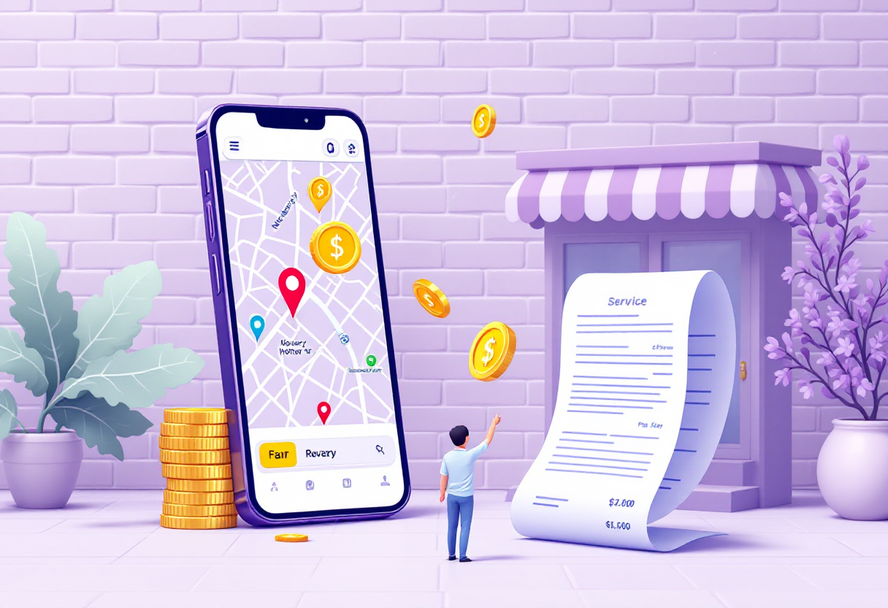

Нотаріальні документи
Довіреність, заяви, дублікати — коли потрібен нотаріус і як підготуватись до візиту.
Коли потрібен нотаріус
Нотаріус засвідчує справжність підписів і документів. Без нього не обійтись у ряді ситуацій.
- Оформлення довіреності (на авто, нерухомість, представництво).
- Вступ у спадщину або відмова від нього.
- Засвідчення копій документів.
- Угоди з нерухомістю.
Довіреність: що це і як оформити
Довіреність дозволяє іншій людині діяти від вашого імені — підписувати документи, отримувати майно, керувати автомобілем.
- Генеральна довіреність — широкі повноваження на всі дії.
- Спеціальна — на конкретну операцію (продаж авто, отримання посилки).
- Потрібні: паспорт довірителя і дані особи, яка отримує повноваження.
- Оформлення займає 15–30 хвилин у будь-якого нотаріуса.
Засвідчення копій документів
Іноді потрібна нотаріально засвідчена копія — для банку, суду або держоргану.
- Принеси оригінал документа та його копію.
- Нотаріус ставить штамп і підпис — копія стає юридично дійсною.
- Альтернатива: у Дії можна отримати деякі офіційні витяги онлайн.

Як знайти нотаріуса і скільки це коштує
Нотаріуси є державні та приватні. Послуги мають фіксовані тарифи, але приватні можуть брати більше.
- Знайти нотаріуса: сайт Нотаріальної палати України або Google-пошук.
- Попередньо запишись — більшість нотаріусів приймає за записом.
- Засвідчення підпису — від 100–200 грн, довіреність — від 500 грн.
- Візьми готівку: не всі приймають картку.